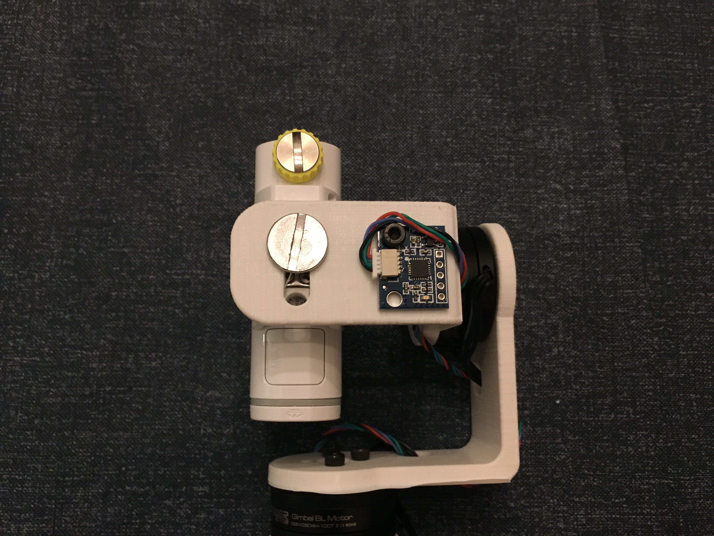
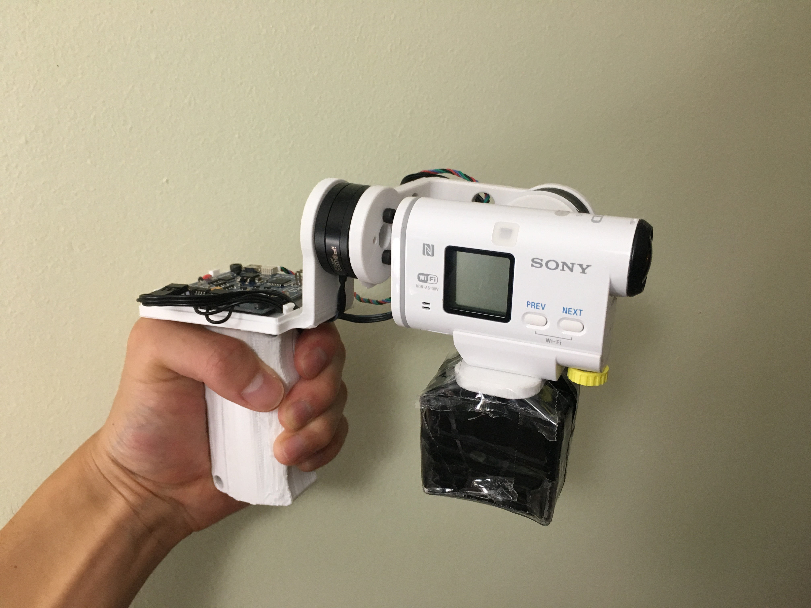
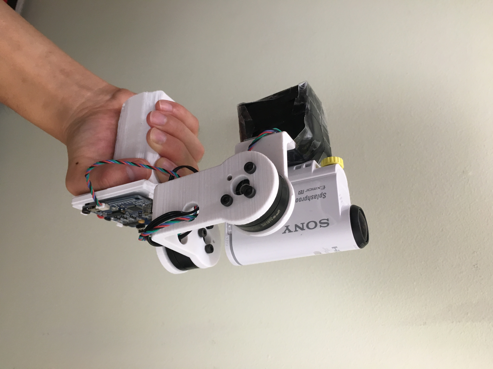
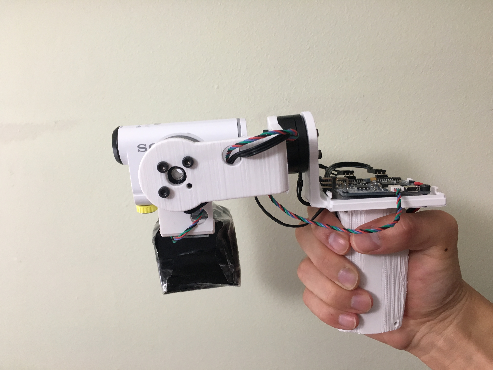
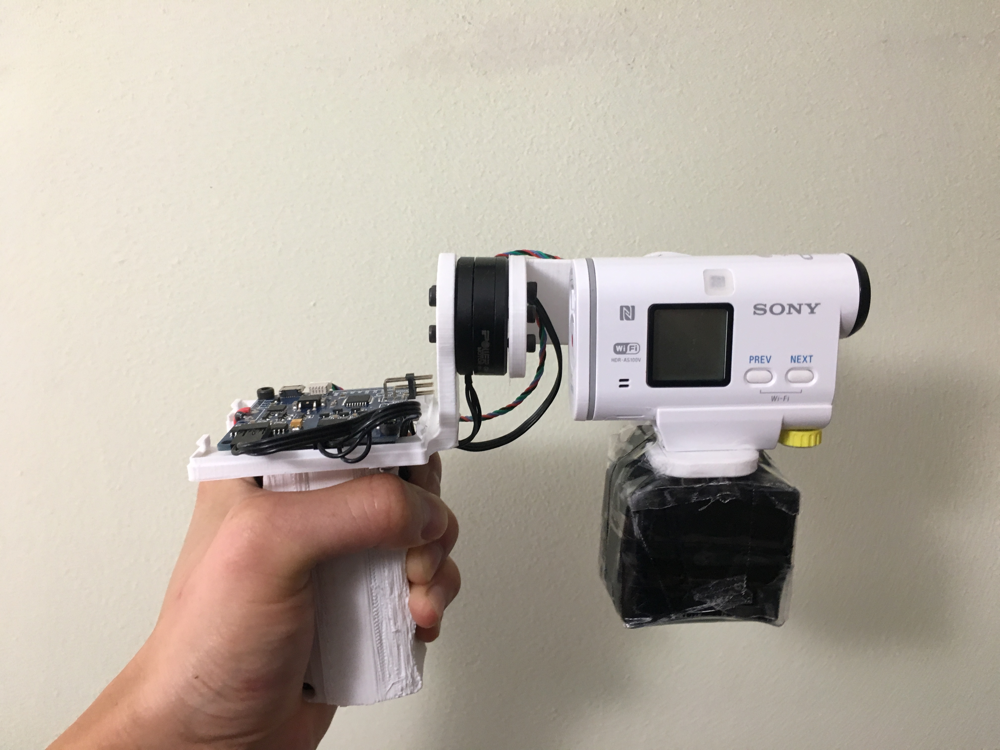

2 Axis Brushless Gimbal
I created a 2 axis handheld gimbal using 3D printed parts, gimbal controller, and brushless DC motors. I used a gimbal controller that is normally meant for camera drones but works well in my instance for a cheap price. Hence why the size of the gimbal controller is quite large. There are two brushless DC motors that provides stabilization for two axis, pitch and roll. The construction of the gimbal consist of 3D printed parts for the handle, pitch and roll brackets, and controller mount. A 1300mAh LiPo battery was used to power the gimbal.
Design

Parts for the gimbal were designed in Solidworks and entirely 3D printed in PLA.
Assembly

3D printed handle that fits the 1300 mAh liPo battery to power the gimbal

The gimbal controller mount is screwed to the top of the handle. The 3D printed controller mount also has a bracket to secure the roll motor in place

The roll motor (middle) and pitch motor (bottom) are installed along with the roll bracket

The pitch bracket will have the pitch motor, camera, and IMU installed onto it. The slot in the bracket helps me adjust the position of the camera so that it is in equilibrium balance

The IMU is installed underneath the camera and connects to the gimbal controller

The downside of creating a 3D printed gimbal, as opposed to using aluminum brackets, is that it is necessary to balance the gimbal to offset the weight of the motors. Since the 3D printed parts are very light, I needed to find a way balance the entire assembly. I found that adding three D cell batteries underneath the camera was the right amount of counterweight to balance the gimbal. Now the gimbal was perfectly balanced with the motors off and tuning the controller was easier

Fully assembled gimbal with the added counterweight





